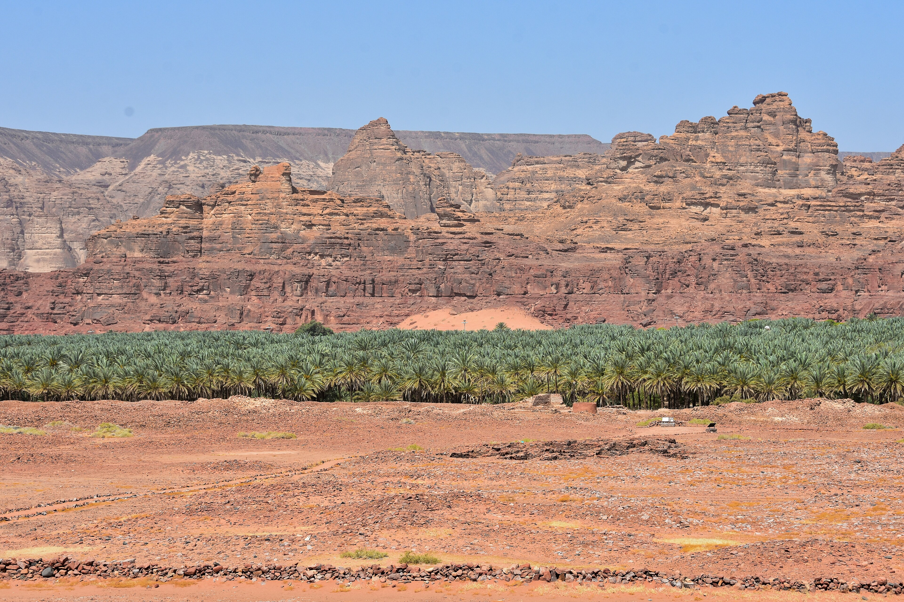

نصائح قبل أن تنطلق
متى تزور العُلا، وماذا تحمل في حقيبتك، وكيف تتنقل بين معالمها.
متى تزور العُلا؟
أفضل الأشهر من أكتوبر إلى مارس؛ النهار معتدل والليل بارد في الشتاء. أما الصيف فحرارته تتجاوز 38 درجة في معظم أيامه، فإن زرتها فيه فاجعل جولاتك في الصباح الباكر وبعد العصر.
الصف المميز في الجدول هو الشهر الحالي.
| الشهر | العظمى | الصغرى | مناسب للزيارة |
|---|---|---|---|
| يناير | 21° | 5° | ممتاز |
| فبراير | 24° | 7° | ممتاز |
| مارس | 28° | 11° | ممتاز |
| أبريل | 32° | 15° | جيد |
| مايو | 36° | 20° | حار |
| يونيو | 39° | 23° | حار جدًا |
| يوليو | 40° | 24° | حار جدًا |
| أغسطس | 40° | 24° | حار جدًا |
| سبتمبر | 37° | 21° | حار |
| أكتوبر | 33° | 16° | جيد |
| نوفمبر | 27° | 11° | ممتاز |
| ديسمبر | 22° | 6° | ممتاز |
نصائح عملية
البس ملابس خفيفة فاتحة اللون في النهار، واحمل سترة للمساء؛ فليالي الشتاء في العُلا باردة. واختر حذاءً مريحًا للمشي على الرمل والصخور.
زيارة الحِجر ودادان تكون بجولات مع مرشد، فاحجز مقعدك من موقع Experience AlUla قبل موعدك بوقت كافٍ، خاصة في الإجازات والمواسم.
المسافات بين المعالم طويلة نسبيًا، فالحِجر وحدها تبعد نحو 20 كيلومترًا شمال البلدة القديمة. السيارة أسهل وسيلة، ونقطة انطلاق حافلات جولة الحِجر محددة في تذكرتك.
أجمل ضوء في العُلا عند الشروق والغروب، حين يتحول لون الصخور إلى الأحمر والذهبي. جبل الفيل ومطل حرة عويرض من أشهر مواقع تصوير الغروب.
لا تلمس النقوش ولا تتسلق الصخور الأثرية، والتزم بالممرات المحددة للزوار. هذه المواقع صمدت آلاف السنين، وحمايتها مسؤولية كل زائر.
قبل أن تغادر منزلك
- تحقق من الطقس في العُلا من الصفحة الرئيسية.
- احجز جولتي الحِجر ودادان مسبقًا.
- رتّب أيامك في مخطط الرحلة.
- جهّز حقيبتك من القائمة أدناه.
- نزّل خريطة العُلا على جوالك لتعمل دون إنترنت.
هل تعلم؟
قصر الفريد في الحِجر لم يكتمل نحته، ولهذا يكشف للباحثين مراحل نحت الواجهات النبطية.
حقيبة الرحلة
أشّر على ما جهّزته، وتبقى اختياراتك محفوظة حين تعود للصفحة.
جهّزت 0 من 9